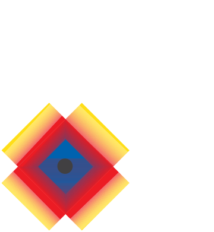

Baby sphere
Infant recordings carry the strictest protection and the highest value per hour: corpora are small, expensive and hard to replace. They are also where masking hurts most, because in gaze and affect work the face is not what identifies the child, it is the measurement.
Infant and caregiver interaction from birth to about three years, including the audiovisual characterisation of autism. The field shares protocols, stimuli and analysis scripts well. It does not share raw recordings, and it has no pinned, tested pipeline anyone can re-run. That second gap is the one this sphere exists for.
EnvisionBOX began as a collection of tutorials. The aim is to become a platform, then infrastructure that labs, consortia and funders can build on. Each step is defined by what someone else can rely on, and passing between steps has a gate: criteria from the BOX framework that must be met first.
Runnable methods for infant recordings.
Mostly technical. A small team can meet it.
Methods that are tested, versioned and citable.
Mostly social and institutional. No single lab can meet it.
Services that labs and consortia build on.
From the BOX framework. These keep validity, researcher judgement and methodological diversity intact as tools grow into infrastructure.
Every tool ships with a synthetic test signal, a human-coded reference set and a short validation report naming its known failure conditions.
Here: Each infant module ships with synthetic infants as a test signal (MINI-RGBD, the synthetic part of SyRIP), a small human-coded infant reference set, and a report naming where it fails: supine infants, a parent in frame, poor light.
Every derived measure can be viewed against the video it came from, and this view is the default, not an option.
Here: Every gaze label, pose and vocal-type tag can be played back over the recording. For infant video that playback runs inside the lab or the secure environment, because the video does not leave.
Several trackers, features and metrics run through common interfaces, and benchmarks compare them rather than crown one.
Here: Several pose trackers (ViTPose, RTMPose, MediaPipe) and gaze coders (iCatcher+, OWLET) run through one interface. The benchmark reports where each holds, instead of picking a winner.
Counted from the sphere matrix, not estimated. A method can carry a partial finding and an open question at once, so the two numbers below are not meant to add up to the first.
Every sphere is built along the same four. Protection is assumed under all of them: masking, consent and data governance are the condition for a method to be listed, not a feature of the sphere.
Pathway 1
Dutch ethics boards treat every recording as personal data, blurred or not. Parents consent for children under 16, children co-consent from 12, and since 1 September 2026 a child of 12 can withdraw the consent a parent gave. Sharing needs its own opt-in. So raw video stays in the lab and derivatives travel. A skeleton is lower-risk, not anonymous: body motion alone identified 55,000 VR users with 94% accuracy.
Face, and usually the caregiver in frame as well.
GDPR with heightened protection for minors; caregiver consent, often time-limited.
The hardest trade in the set. The face is frequently the measurement itself, in gaze and affect work, and infant corpora are small and costly, so the value of being able to reuse them is highest exactly where protection is strictest.
Pathway 2
Generic adult-trained pose models now beat infant-specific ones. On supine infant video ViTPose scored 88.5 AP, MediaPipe 1.8, DeepLabCut 0.0; on newborn phone videos RTMPose was best. The two infant-specific repositories were last updated in 2024 and 2022. iCatcher+ agrees with human gaze coders on 78–85% of infant frames. Face blur does not change general-movement scores, but the best infant face-swap keeps only 51% of emotion labels. Of the 18 methods in the matrix, one has been run on an infant recording and reported.
Pathway 3
ManyBabies shares every stimulus and script — its first study ran in 69 labs across 16 countries with 2,845 infants — but states it cannot run “born open”. At pipeline level one infant benchmark ships containers and one audio stack has a lockfile. No reproducibility audit of infant tools exists. No module on this platform pins its dependencies yet.
Pathway 4
The communities exist. Databrary has 915 partner institutions, though only 5–45% of its investigators have ever shared a volume. HomeBank keeps 17 of 22 corpora restricted. Runnable infant-method notebooks do not exist anywhere. No tool has been validated with deaf and signing families, blind caregivers or non-speaking children.
In signed languages facial expression is grammar - question marking, negation, topic marking, adverbial modification. Masking the face does not reduce the signal, it removes the language. The hardest point on the frontier in this matrix, and invisible to any measure scoring pose recovery alone.
Gaze and mutual-gaze measures assume sighted interaction and can report absent engagement where another modality carries it. Also the learner side: visual-only results and unlabelled figures make a module unreadable.
Wheelchair use, tremor, spasticity, prosthetics and hemiplegia sit outside the movement range pose models were trained on - the same failure infants produce, by a different route.
Atypical or absent speech, including AAC use. Audio-first pipelines measure silence; where an AAC device carries the message its screen is both content and identifier, and no masking tool currently treats it as a target.
Mainly a Face A concern - dense jargon, silent defaults, long unstructured tutorials - but also Face B wherever a measure assumes a normative interaction style.
Each item under a pathway is a contribution someone can make. Run one method on recordings from this sphere, report what survived, and the cell stops being blank. Findings are credited to whoever establishes them.